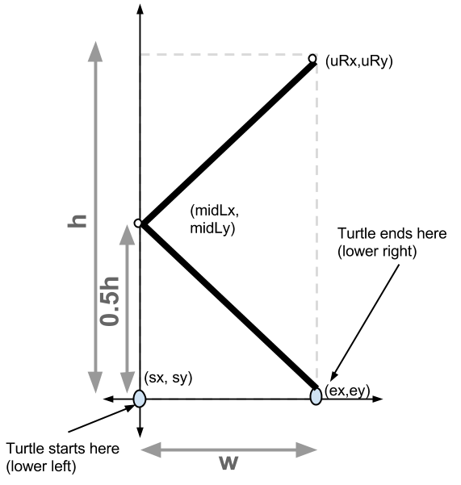
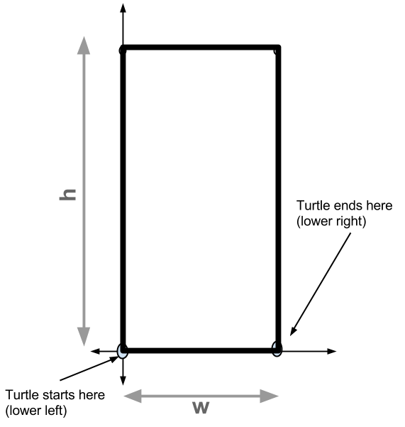
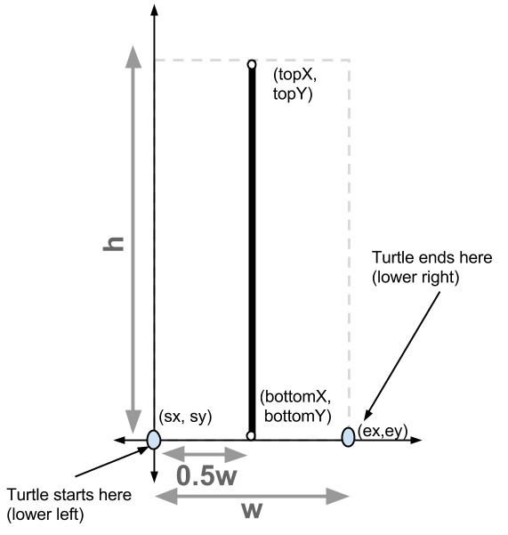
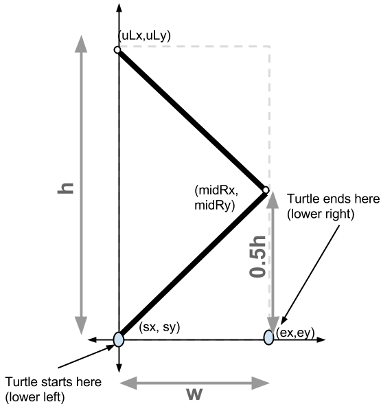
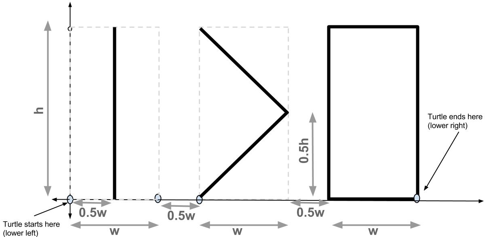
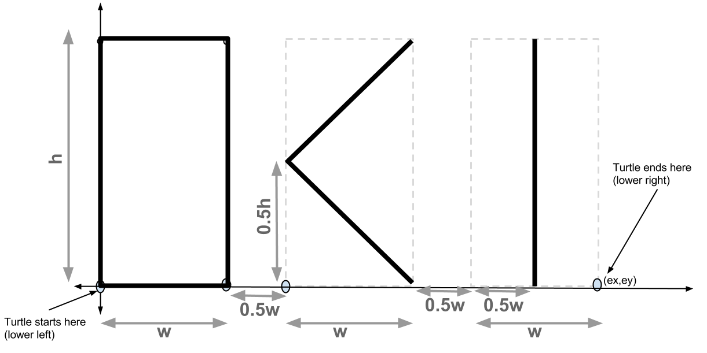

In lab02, you worked with Turtle graphics, creating letters for your initials. In this first few problems on this exam, you'll work with some code that does something similar. We will discuss these function definitions:
drawZero(t,w,h) Draw a "number 0" symbol (as a simple rectangle)drawOne(t,w,h) Draw a "number 1" symbol.drawLessThan(t,w,h) Draw the "less than" symbol.drawGreaterThan(t,w,h) Draw the "greater than" symbol.drawSpace(t,w) Doesn't really draw anything; just moves over to right by distance wHere are diagrams that were used to plan the characters, similar to those you were encouraged to create in lab02. Refer to those as you look at the code for the functions you are asked to read or write.
|  |  |
|  |  |
The function drawOneGreaterThanZero() is supposed to produce this:
|  |
Here's the code:
def drawOneGreaterThanZero(t,w,h):
drawOne(t,w,h)
drawSpace(t,w/2)
drawGreaterThan(t,w,h)
drawSpace(t,w/2)
drawZero(t,w,h)
The function drawZeroLessThanOne() is supposed to produce this:
|  |
Here's the code:
def drawZeroLessThanOne(t,w,h):
drawZero(t,w,h)
drawSpace(t,w/2)
drawLessThan(t,w,h)
drawSpace(t,w/2)
drawOne(t,w,h)
|